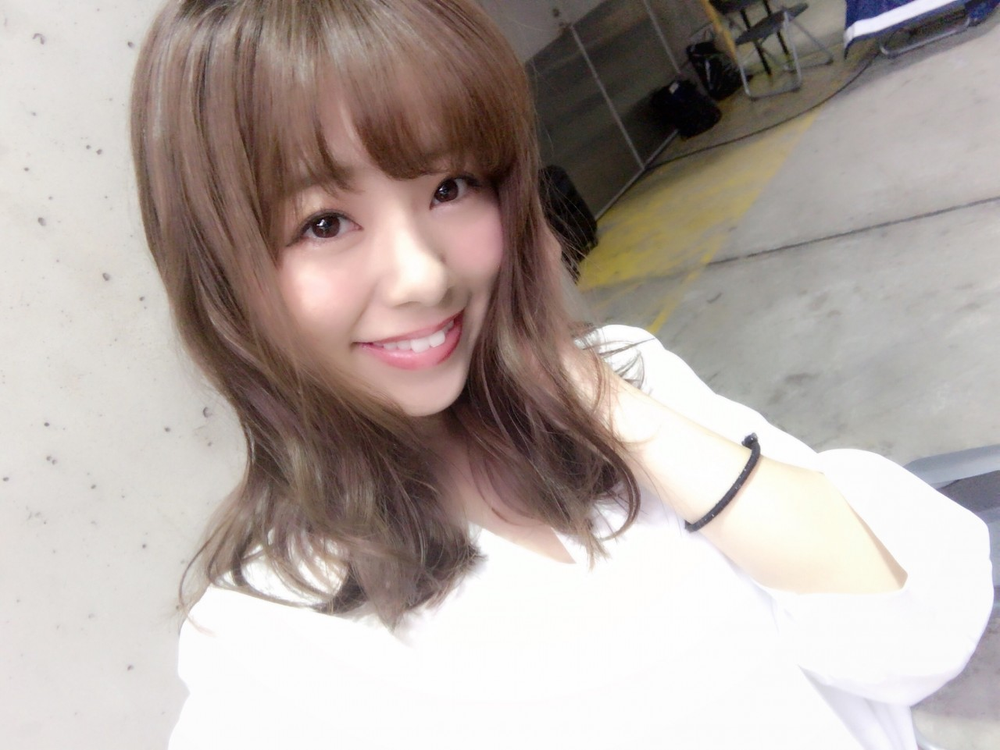
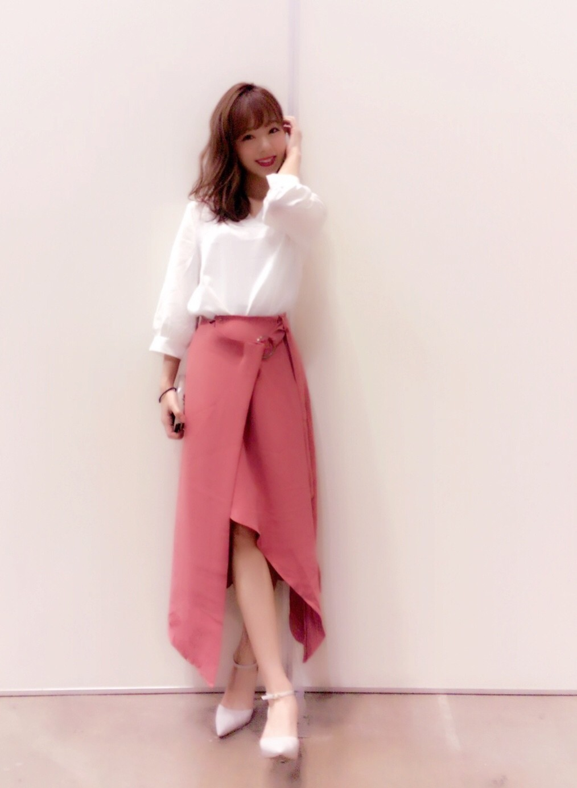
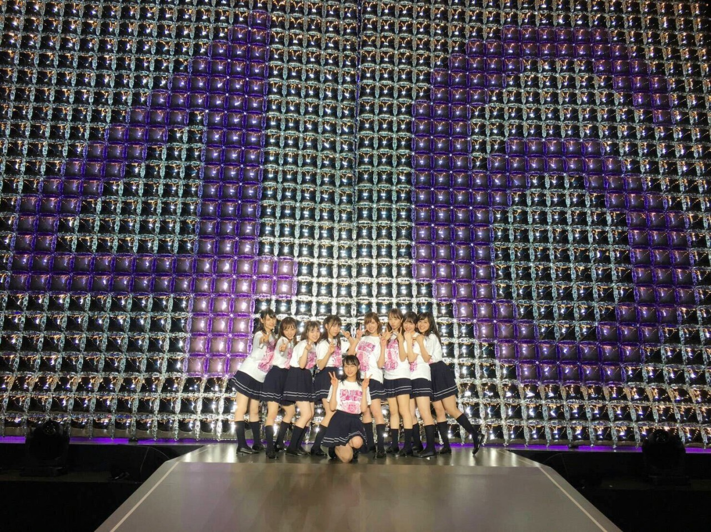
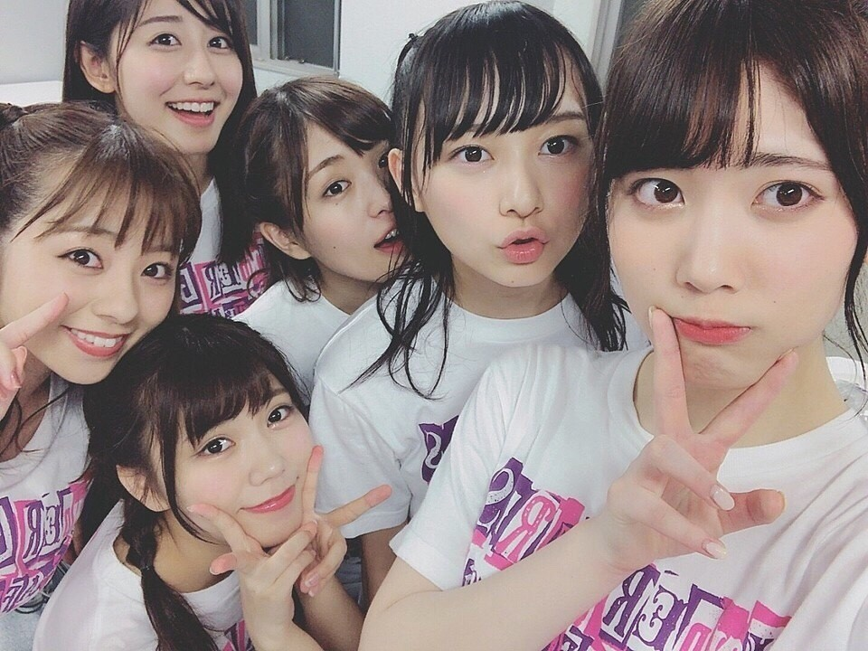

| 2017/04 24 Mon | 川村真洋 アンダラ最強やねん♡ まひろ |
こんにちわ♡
ろってぃーだよ.＊

昨日は握手会でした♡
私服はこんな感じで。。

白シャツと
ディープピンクのスカート♡
腰に付いてるリングが可愛いの(*^^*)
デザインが綺麗で一目惚れし最近購入しました!
ピアスはシルバーにしました!
それと有難いことに17thの個別握手会が全会場 完売いたしました(´；ω；`)
ありがとうございます‼︎
そーいや前前回のblogで
「シルバー派？ゴールド派？」って聞いた後のコメントを見て驚いたんですが， 意外とゴールド派多い‼︎
私もゴールド大好きだしゴールドの良さも分かるんだけど，シルバー派が多いのかな？って思ってたから，『えっ！意外‼︎ そーなんだ‼︎』って思っちゃった♪
ちょーど半々か，少しゴールド派が勝ってたかな？って感じでしたよ♡
そんなこんなで，，
アンダーライブ‼︎‼︎
無事、大成功でした。

Live終了後，巨大風船の前で。
今回のアンダラでは
「狼に口笛を」
「自由の彼方」
「ここにいる理由」
「太陽ノック」の4曲をセンターでやらせて頂きました。
どれもダンスナンバーな楽曲でLiveでも盛り上がる定番ソングってイメージ。
それにいつも16人等でする所，5人等でのパフォーマンス、、
プレッシャーもあったし，私がセンターで会場を沸かせる事はできるのだろうか？とも悩んだりもしました。
本番1人でセンターに登場した時のあの声援は一生忘れません。本当に嬉しかったです。ありがとうございます！
狼の冒頭はソロで歌い，ソロダンスもしました。 イントロ等も今回のライブverになってたりだとか、、
自由の彼方では
ジャケットを取り入れたパフォーマンスをさせて頂きました！ その流れで「ここにいる理由も」もやり、、、
太陽ノックでは和傘を使ったパフォーマンスをさせて頂きました。
本当に本当に本当に本当に
楽しかったです、最高でした。
2公演目のMCでは少し真面目な話をさせてもらったんです。
努力しなくてもろってぃーは元々できるって思われる事があるけど，元々じゃない，努力って事を忘れないでほしいですみたいな内容だったんですが、、
こんな事自分で言うのは本当は好きじゃないんです、私頑張ってますみたいな事言いたくなかったんです。
私がそう言う性格ってのを見抜いてる人は見抜いてると思うんだけど、、
自分から伝えなきゃ伝わらない場合もあるのかなぁ？たまには弱音吐いてもいいのかなぁ？って思い話させて頂きました。
私が言葉に詰まった時に、ファンの皆さんが沢山声援をくれて支えてくれました(/ _ ; ) 近くのアリーナ席から「ろってぃーが頑張ってるのは分かってるよー！」「そんなの知ってるよー！」「頑張れー！」って、、
本当に嬉しかったです。
私がこうしてあんな素敵なステージに立てているのも，全部全部，応援してくださっているファンの皆さんのおかげです‼︎ 本当に大好きです‼︎
年がら年中Liveしていたい‼︎って思えるLiveでした(*^^*)
長々とすみません♡
また更新します！またね。
